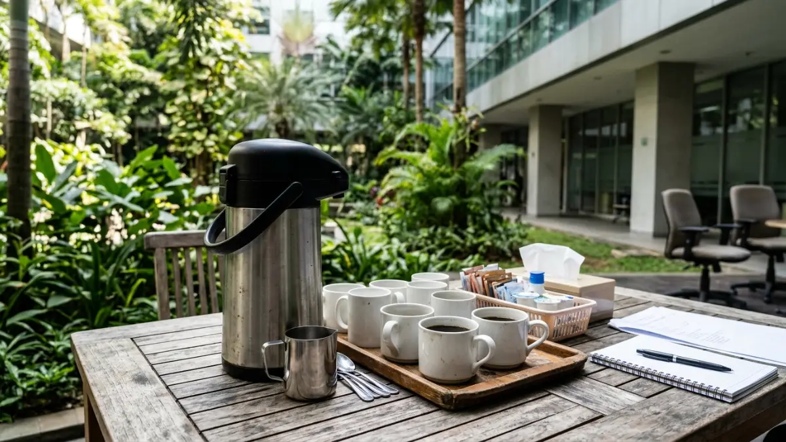

Menu coffee break outdoor yang ideal terdiri dari minuman panas dan dingin, air putih, serta camilan kering atau buah yang aman pada suhu ruang.
- Menu coffee break outdoor harus tahan suhu ruang, mudah disajikan, dan tidak berantakan saat dimakan sambil berdiri.
- Survei Jakpat April 2026 menunjukkan 58 persen responden minum kopi minimal sekali sehari, sehingga kopi layak menjadi menu utama.
- Sediakan air putih dan minuman non-kafein untuk peserta yang tidak minum kopi.
- Catat alergi, pantangan halal, dan preferensi vegetarian dari peserta sebelum acara.
- Hindari hidangan berbahan santan, krim, atau mayones pada cuaca panas.
DAFTAR ISI
- 1. Apa Kriteria Menu Coffee Break Outdoor yang Baik?
- 2. Minuman Apa yang Cocok untuk Coffee Break Outdoor?
- 3. Camilan Apa yang Tahan di Luar Ruangan?
- 4. Berapa Batas Kafein yang Aman bagi Peserta?
- 5. Bagaimana Mengakomodasi Alergi dan Pantangan Peserta?
- 6. Apa Contoh Susunan Menu untuk Beberapa Skenario?
- 7. Apa Kesalahan yang Sering Terjadi pada Menu Coffee Break Outdoor?
- 8. Kesimpulan
- 9. FAQ
1. Apa Kriteria Menu Coffee Break Outdoor yang Baik?
Menu coffee break outdoor yang baik memenuhi empat kriteria: tahan suhu ruang, mudah dimakan tanpa piring besar, minim sisa, dan sesuai kebutuhan diet peserta.
Kriteria pertama adalah ketahanan. Ruang terbuka membuat suhu sulit dikendalikan, sehingga makanan dengan kadar air dan lemak tinggi lebih cepat rusak.
Kriteria kedua adalah kepraktisan. Peserta umumnya makan sambil berdiri atau berjalan, jadi camilan yang bisa dipegang satu tangan jauh lebih nyaman.
Kriteria ketiga adalah kebersihan dan minim sisa. Kemasan individual membantu menjaga kebersihan sekaligus mempermudah penghitungan porsi.
Kriteria keempat adalah inklusivitas. Menu perlu mempertimbangkan peserta yang tidak mengonsumsi produk tertentu karena alasan agama, kesehatan, atau pilihan pribadi.
Penerapan kriteria ini selaras dengan prinsip umum yang dibahas pada panduan utama tentang coffee break untuk meeting outdoor.
2. Minuman Apa yang Cocok untuk Coffee Break Outdoor?
Minuman cocok untuk coffee break outdoor adalah kopi panas dari termos, kopi atau teh dingin, air putih, dan infused water, plus pilihan non-kafein.
Kopi tetap menjadi pilihan utama karena kebiasaan peserta. Menurut survei Jakpat yang dilakukan pada 22 sampai 24 April 2026 terhadap 1.238 responden, 29 persen responden minum kopi satu kali sehari, 24 persen dua sampai tiga kali sehari, dan 5 persen lebih dari tiga kali sehari.
Total 58 persen responden minum kopi setiap hari, sedangkan hanya 7 persen yang jarang atau tidak pernah.
Berikut kelompok minuman yang dapat disiapkan:
- Kopi panas. Simpan dalam termos besar atau dispenser berpenahan panas agar suhu tetap terjaga.
- Kopi atau teh dingin. Sajikan dalam wadah dengan es, dan pisahkan es dari minuman bila acara berlangsung lama agar rasa tidak encer.
- Teh dan jahe hangat. Pilihan ini cocok untuk cuaca sejuk atau peserta yang menghindari kopi.
- Air putih dan infused water. Air putih wajib tersedia sepanjang acara karena paparan panas meningkatkan kebutuhan cairan.
Pada hari yang sangat panas, minuman dingin biasanya lebih cepat habis. Siapkan cadangan es dan gelas dalam jumlah memadai.

Termos kopi besar dan deretan gelas yang disiapkan untuk menyajikan minuman hangat selama coffee break meeting outdoor di area terbuka. (Ilustrasi)3. Camilan Apa yang Tahan di Luar Ruangan?
Camilan tahan di luar ruangan adalah kue kering, roti tanpa krim, kacang panggang, keripik, dan buah utuh yang praktis dimakan sambil berdiri.
Kue kering dan biskuit relatif stabil karena kadar airnya rendah. Roti isi selai atau cokelat juga aman selama tidak mengandung krim segar. Buah utuh seperti pisang dan jeruk praktis karena memiliki kulit pelindung.
Camilan yang perlu diwaspadai adalah kue berbahan krim, puding susu, sandwich dengan mayones, dan hidangan bersantan.
Pada suhu udara tinggi, makanan semacam ini cepat berada pada zona suhu berbahaya. Aturan waktu aman dijelaskan pada artikel keamanan makanan untuk coffee break outdoor.
Gunakan kemasan individual untuk memudahkan distribusi dan menjaga kebersihan. Camilan yang dibungkus satuan juga mengurangi sentuhan tangan pada makanan bersama.
4. Berapa Batas Kafein yang Aman bagi Peserta?
Menurut otoritas pangan Eropa EFSA (2015), orang dewasa sehat dapat mengonsumsi kafein hingga 400 mg per hari dan 200 mg sekali konsumsi tanpa masalah keamanan.
EFSA juga menyatakan bahwa ibu hamil dan menyusui sebaiknya tidak melebihi 200 mg kafein per hari.
Satu dosis tunggal 200 mg setara dengan sekitar dua setengah cangkir espresso atau empat cangkir teh, dan satu cangkir kopi rata-rata mengandung sekitar 95 mg kafein.
Bagi penyelenggara, angka ini menjadi dasar untuk menyediakan pilihan yang beragam. Peserta yang sudah minum kopi di pagi hari mungkin tidak perlu tambahan di coffee break.
Sediakan teh ringan, kopi tanpa kafein, atau air putih agar peserta bebas memilih sesuai kebutuhan.
Informasi ini bersifat umum dan bukan nasihat medis. Peserta dengan kondisi kesehatan tertentu sebaiknya mengikuti arahan dokter.
5. Bagaimana Mengakomodasi Alergi dan Pantangan Peserta?
Alergi dan pantangan peserta diakomodasi dengan mengumpulkan data sebelum acara, melabeli bahan pada setiap menu, dan menyediakan minimal satu pilihan aman per kelompok.
Langkah pertama adalah formulir singkat pada saat pendaftaran yang menanyakan alergi, pantangan halal, dan preferensi vegetarian atau vegan.
Langkah kedua adalah pelabelan. Cantumkan bahan utama dan potensi alergen seperti kacang, susu, telur, dan gluten pada kartu kecil di dekat makanan.
Langkah ketiga adalah pemisahan. Letakkan makanan untuk peserta dengan alergi pada area tersendiri dan gunakan alat saji terpisah untuk mencegah kontaminasi silang.
Langkah keempat adalah komunikasi. Tugaskan satu petugas yang dapat menjawab pertanyaan peserta tentang bahan makanan.
Pendekatan ini menunjukkan perhatian penyelenggara terhadap kenyamanan peserta, sekaligus mengurangi risiko insiden yang dapat mengganggu jalannya rapat.
6. Apa Contoh Susunan Menu untuk Beberapa Skenario?
Susunan menu menyesuaikan cuaca dan durasi: minuman dingin dan buah saat panas, minuman hangat dan roti saat sejuk, camilan padat untuk acara panjang.
- Cuaca panas, acara 2 jam. Kopi dan teh dingin, air putih, infused water, buah potong dingin, dan biskuit.
- Cuaca sejuk, acara 3 jam. Kopi panas, teh jahe, roti isi, kue kering, dan kacang panggang.
- Workshop seharian. Dua sesi coffee break dengan menu berbeda, misalnya buah dan kue kering pada sesi pagi, lalu roti dan camilan gurih pada sesi sore.
Susunan ini hanya contoh umum. Sesuaikan dengan jumlah peserta, anggaran, dan preferensi tim.
7. Apa Kesalahan yang Sering Terjadi pada Menu Coffee Break Outdoor?
Kesalahan menu yang sering terjadi meliputi memilih makanan mudah basi, tidak menyediakan alternatif non-kafein, melupakan label alergen, dan menyiapkan jumlah yang tidak sesuai kebutuhan.
- Menyajikan makanan berkrim atau bersantan pada cuaca panas.
- Menyediakan kopi saja tanpa pilihan lain.
- Tidak menanyakan pantangan peserta sebelum acara.
- Menyiapkan terlalu banyak jenis menu sehingga antrean lambat.
Menu yang sederhana namun konsisten umumnya lebih baik daripada menu yang beragam tetapi sulit dikelola di lapangan.
8. Kesimpulan
Menu coffee break outdoor sebaiknya sederhana, tahan cuaca, dan inklusif. Dahulukan kopi panas atau dingin, air putih, dan camilan kering yang stabil, lalu tambahkan pilihan non-kafein dan label alergen.
Dengan menu yang tepat, peserta merasa terlayani dan penyelenggara dapat menjaga keamanan makanan tanpa menambah beban kerja.